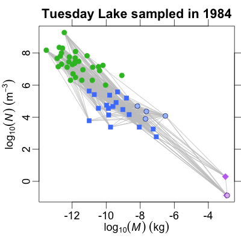
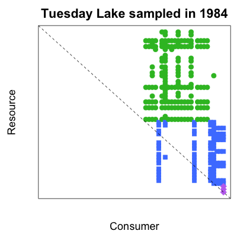
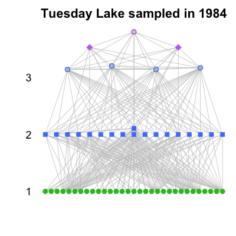
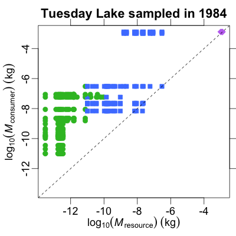
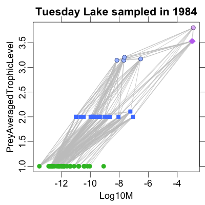

Cheddar
If you are a food-web ecologist working in R, Cheddar will save you time
So what does it do?
Some example plots and tables are below, together with the R code that generated them.
Mass-abundance allometry
library(cheddar) data(TL84) PlotNvM(TL84)
Predation matrix
library(cheddar) data(TL84) PlotPredationMatrix(TL84)
Nodes stacked vertically by trophic level
library(cheddar) data(TL84) PlotWebByLevel(TL84)
Consumer vs resource body mass
library(cheddar) data(TL84) PlotMCvMR(TL84)
Prey-averaged trophic level vs body mass
library(cheddar) data(TL84) PlotNPS(TL84, 'Log10M', 'PreyAveragedTrophicLevel')
A table of node properties
library(cheddar)
data(TL84)
head(NPS(TL84, c('Log10M', 'Log10N', TL='PreyAveragedTrophicLevel',
TS='TrophicSpecies')))
Log10M Log10N TL TS Trichocerca cylindrica -9.420216 4.9116902 2.000000 16 Tropocyclops prasinus -8.164309 4.6919651 3.142857 13 Chaoborus punctipennis -6.522879 4.0791812 3.171344 20 Phoxinus eos -2.995679 0.2944662 3.529951 21 Phoxinus neogaeus -2.931814 -0.8761484 3.529951 21 Umbra limi -2.889410 -0.8794261 3.802678 22
These examples scratch the surface of what Cheddar can do! Why not install it and try it for yourself?